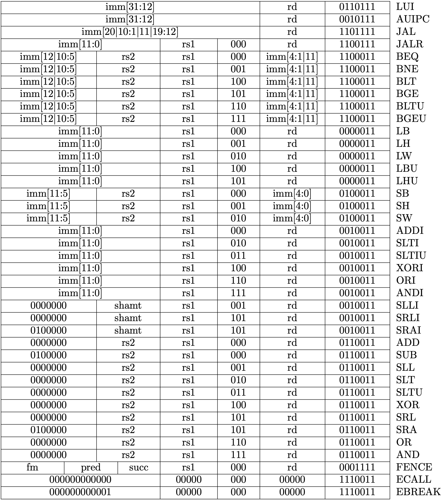

内存和总线
在上一节，我们把内存和CPU放在同一个结构体中，但在真实的硬件中，这两部分是分开的。如下图所示：

图片来自 Operation System: Three Easy Pieces
CPU 和内存通过总线（bus）进行数据交换。
因此，我们定义以下结构：
cpu.rs
pub struct Cpu {
pub regs: [u64; 32],
pub pc: u64,
pub bus: Bus,
}
CPU 现在不包含内存，而是连接了总线。总线上可能有多个 IO 设备，但目前我们只有一个（DRAM）。
bus.rs
pub struct Bus {
dram: Dram,
}
dram.rs
pub struct Dram {
pub dram: Vec<u8>,
}
内存 API
内存（DRAM）只有两个功能：store，load。保存和读取的有效位数是 8，16，32，64。回顾上一节，我们采用的是小端字节序。实现如下
dram.rs
impl Dram {
pub fn new(code: Vec<u8>) -> Dram {
let mut dram = vec![0; DRAM_SIZE as usize];
dram.splice(..code.len(), code.into_iter());
Self { dram }
}
// addr/size must be valid. Check in bus
pub fn load(&self, addr: u64, size: u64) -> Result<u64, RvException> {
let nbytes = size / 8;
if (nbytes + addr - 1) > DRAM_END {
return Err(RvException::InvalidAddress(addr));
}
let index = (addr - DRAM_BASE) as usize;
let mut code = self.dram[index] as u64;
// little-endian!
for i in 1..nbytes {
code |= (self.dram[index + i as usize] as u64) << (i * 8);
}
return Ok(code);
}
// addr/size must be valid. Check in bus
pub fn store(&mut self, addr: u64, size: u64, value: u64) -> Result<(), RvException> {
let nbytes = size / 8;
if (nbytes + addr - 1) > DRAM_END {
return Err(RvException::InvalidAddress(addr));
}
let index = (addr - DRAM_BASE) as usize;
// little-endian!
for i in 0..nbytes {
let offset = 8 * i as usize;
self.dram[index + i as usize] = ((value >> offset) & 0xff) as u8;
}
return Ok(())
}
}
这里用到了一些全局变量和异常，定义如下
param.rs
pub const DRAM_SIZE: u64 = 1024 * 1024 * 128;
pub const DRAM_BASE: u64 = 0x8000_0000;
pub const DRAM_END: u64 = DRAM_SIZE + DRAM_BASE - 1;
exception.rs
#[derive(Debug)]
pub enum RvException {
InvalidAddress(u64),
InvalidSize(u64),
InvalidInstruction(u64),
}
总线 API
总线是 CPU 与各种 IO 设备（如键盘、鼠标、屏幕等）通信的渠道。总线上不同的地址范围对应了不同的设备。CPU 通过给总线发指令来间接操作其他的设备。
总线同样仅提供两个操作：store，load。
bus.rs
pub fn valid_size(size: u64) -> bool {
[8, 16, 32, 64].contains(&size)
}
impl Bus {
pub fn new(code: Vec<u8>) -> Bus {
Self { dram: Dram::new(code) }
}
pub fn load(&self, addr: u64, size: u64) -> Result<u64, RvException> {
if !valid_size(size) {
return Err(RvException::InvalidSize(size));
}
match addr {
DRAM_BASE..=DRAM_END => self.dram.load(addr, size),
_ => Err(RvException::InvalidAddress(addr)),
}
}
pub fn store(&mut self, addr: u64, size: u64, value: u64) -> Result<(), RvException> {
if !valid_size(size) {
return Err(RvException::InvalidSize(size));
}
match addr {
DRAM_BASE..=DRAM_END => self.dram.store(addr, size, value),
_ => Err(RvException::InvalidAddress(addr)),
}
}
}
这里，我们检查addr是否包含在DRAM的地址范围，否则报错。
CPU API
现在 CPU 不直接读写内存，而是通过向总线发指令来读写内存。
cpu.rs
impl Cpu {
pub fn new(code: Vec<u8>) -> Self {
let mut regs = [0; 32];
regs[2] = DRAM_END;
let bus = Bus::new(code);
Self {regs, pc: DRAM_BASE, bus}
}
pub fn load(&self, addr: u64, size: u64) -> Result<u64, RvException>{
self.bus.load(addr, size)
}
pub fn store(&mut self, addr: u64, size: u64, value: u64) -> Result<(), RvException> {
self.bus.store(addr, size, value)
}
}
至此，我们已经完成将内存剥离 CPU 的重构工作。您现在可以对main.rs进一步修改，以便成功运行上一节的汇编程序。要改的地方包括：
main.rs
mod param;
mod dram;
mod cpu;
mod bus;
mod exception;
以及main函数。这是一个小小的练习。
支持新的指令
这一节我们将支持以下指令

图片来自原作者的教程

图片来自原作者的教程
我们将实现跳转指令JAL, JALR, BEQ, BNE, BLT, BGE, BLTU, BGEU。这些跳转指令会修改PC寄存器的值。因此，我把对PC的更新放到了execute函数当中。
具体而言，我移除了main.rs中主循环的cpu.pc += 4，同时在每个不修改PC的指令后添加一个self.update_pc()。
cpu.rs
impl Cpu {
// ...
#[inline]
pub fn update_pc(&mut self) -> Result<(), RvException> {
self.pc += 4;
return Ok(());
}
}
在教程中逐个解释逐个实现是不切实际的。我的建议是参考 Riscv Reader 附录的指令说明来一个个实现。我在代码中提供了许多测试，可以帮助你验证自己的实现。
当然，如果你已经很熟悉这些指令，或者想暂时先跳过，可以直接使用我的代码。
指令测试
我们需要对指令的解释做单元测试，以便我们排查 BUG。在上一节，我们通过clang，llvm-objcopy来生成二进制代码。现在我们将这个过程自动化以便于我们在代码中添加测试。
我们将自动化以下过程
clang -S simple.c
clang -Wl,-Ttext=0x0 -nostdlib -march=rv64i -mabi=lp64 -mno-relax -o simple simple.s
llvm-objcopy -O binary simple simple.bin
其中第一行从C代码中生成汇编代码，第二行编译成了一个ELF格式的二进制文件，第三行去掉了ELF格式，只保存了其中的二进制代码。我们分别实现如下：
cpu.rs
#[cfg(test)]
mod test {
use std::fs::File;
use std::io::{Write, Read};
use std::process::Command;
use super::*;
fn generate_rv_assembly(c_src: &str) {
let RV_GCC = "clang";
let output = Command::new(RV_GCC).arg("-S")
.arg(c_src)
.output()
.expect("Failed to generate rv assembly");
println!("{}", String::from_utf8_lossy(&output.stderr));
}
fn generate_rv_obj(assembly: &str) {
let RV_GCC = "clang";
let pieces: Vec<&str> = assembly.split(".").collect();
let output = Command::new(RV_GCC).arg("-Wl,-Ttext=0x0")
.arg("-nostdlib")
.arg("-march=rv64i")
.arg("-mabi=lp64")
.arg("-mno-relax")
.arg("-o")
.arg(&pieces[0])
.arg(assembly)
.output()
.expect("Failed to generate rv object");
println!("{}", String::from_utf8_lossy(&output.stderr));
}
fn generate_rv_binary(obj: &str) {
let RV_OBJCOPY = "llvm-objcopy";
let output = Command::new(RV_OBJCOPY).arg("-O")
.arg("binary")
.arg(obj)
.arg(obj.to_owned() + ".bin")
.output()
.expect("Failed to generate rv binary");
println!("{}", String::from_utf8_lossy(&output.stderr));
}
}
有了以上辅助函数之后，我们可以让 CPU 跑起来。
cpu.rs
mod test {
// ...
fn rv_helper(code: &str, testname: &str, n_clock: usize) -> Result<Cpu, std::io::Error> {
let filename = testname.to_owned() + ".s";
let mut file = File::create(&filename)?;
file.write(&code.as_bytes());
generate_rv_obj(&filename);
generate_rv_binary(testname);
let mut file_bin = File::open(testname.to_owned() + ".bin")?;
let mut code = Vec::new();
file_bin.read_to_end(&mut code)?;
let mut cpu = Cpu::new(code);
for _i in 0..n_clock {
let inst = match cpu.fetch() {
Ok(inst) => inst,
Err(err) => break,
};
match cpu.execute(inst) {
Ok(_) => (),
Err(err) => println!("{}", err),
};
}
return Ok(cpu);
}
}
以上代码将 Riscv 汇编代码写入文件，并生成相应的二进制代码文件，然后创建一个 CPU 进行执行，最终返回该 CPU 实例。我这里没有用到 C 代码，您可以自行添加。
现在，我们对addi添加一个简单的测试。
cpu.rs
mod test {
// ...
#[test]
fn test_addi() {
let code = "addi x31, x0, 42";
match rv_helper(code, "test_addi", 1) {
Ok(cpu) => assert_eq!(cpu.regs[31], 42),
Err(e) => { println!("error: {}", e); assert!(false); }
}
}
}
至此，我们的测试框架也完成了！
riscv_test 宏
以下宏用于简化测试过程。关于宏，我以前在一篇博文中写过一段简短的解释。故不赘述。
cpu.rs
mod test {
// ...
macro_rules! riscv_test {
( $code:expr, $name:expr, $clock:expr, $($real:expr => $expect:expr),* ) => {
match rv_helper($code, $name, $clock) {
Ok(cpu) => {
$(assert_eq!(cpu.reg($real), $expect);)*
}
Err(e) => { println!("error: {}", e); assert!(false); }
}
};
}
}
有了这个宏，以上的测试可以简化成这样：
mod test {
//...
#[test]
fn test_addi() {
let code = "addi x31, x0, 42";
riscv_test!(code, "test_addi", 1, "x31" => 42);
}
}
总结
我们重构了 CPU 的结构，总线连接了 CPU 和内存。后续我们还会添加更多的设备到总线上。因此，我们添加了多种指令的支持。为了支持跳转指令，我们将更新 PC 的步骤也放到了execute当中。此外，我们实现了一个测试框架，便于及时验证我们的实现。在下一节中，我们将添加对控制状态寄存器（Control Status Register）的读写支持。